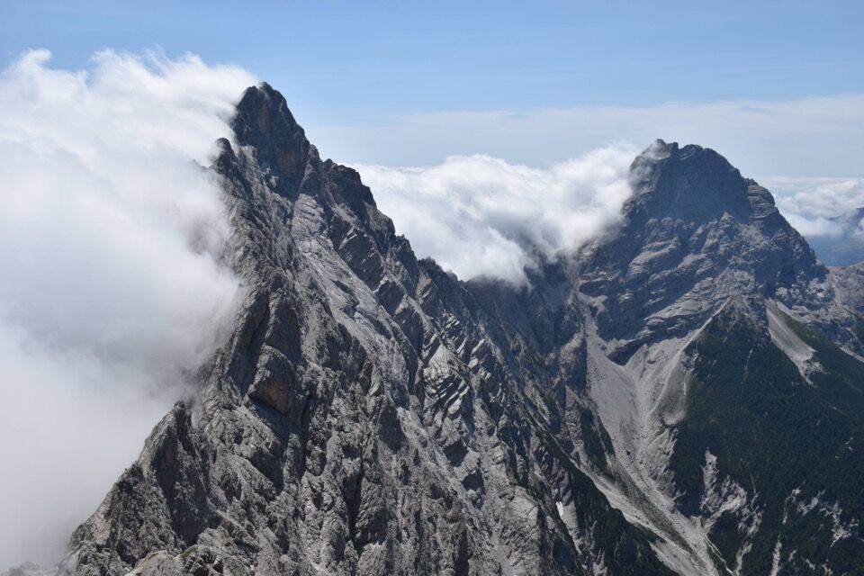

In teoria cresta Nord, nella pratica una roba un po' strana. Comunque un giro molto istruttivo sul versante veneto del gruppo Preti—Duranno, che è quello più intrigante.
Fa sempre piacere seguire le orme di Antonio Berti (Berti—Tarra, 2 luglio 1914, in discesa dopo essere saliti dalla val di Collalto per la Cengia delle Torte e il Cadin di Géa).

A casera Laghet de Sora troviamo Jacopo e colleghi della forestale con cui scambiamo qualche parola.
«Cresta Nord? Borsat? Ciol de Mene Borsat? Ma voi siete matti...!»
S'intravede la bella conca del Cavalét.
Zima de Colalto: ah che bei posti!
Fortunatamente riesco a vedere qualcosina verso le Marmarole Sud: 1. Pala di Meduce — 2. Cima Schiavina — 3. Cima di Vallonga Sud — 4. Monticello — 5. Cime di Valtana.
Non ci pare saggio imitare Alex Honnold...
...meglio seguire le vie più facili del cjamoç sotto-cresta.
Verso il Cadore, col monte Pizié. Invitante la val di Pizié no?
Zima de Colalto, ci vedremo presto.
E via giù.
La Cima dei Frati.
L'infido forcellino d'uscita della via della val Montina per parete Ovest, con l'ometto di Luca Basso.
La val dei Preti, mostruosa: epperò le bestie salgono.
«Una sera [Pierino di Caralte] mi narrò una delle memorie del suo trisavolo Bepi tramandate da sua nonna "...qualche ardito contrabbandiere dell'alta Val Cellina osava, di ritorno dai suoi affari, risalire dal Piave la Val Montina e poi la Val dei Preti sino all'omonima forcella per poi scendere a Cimolais e Claut..."» (vedi post di Luca Basso che ha risalito la Val dei Preti nel luglio 2024, sbucando su Cima Laste dopo 12 ore di salita).
La parete Ovest della Cima dei Preti, alta più di 1000m sopra la val Montina, dove si snodano almeno due itinerari naturali percorsi dai camosci e un tempo da qualche ardito cacciatore.
E domani che si fa?